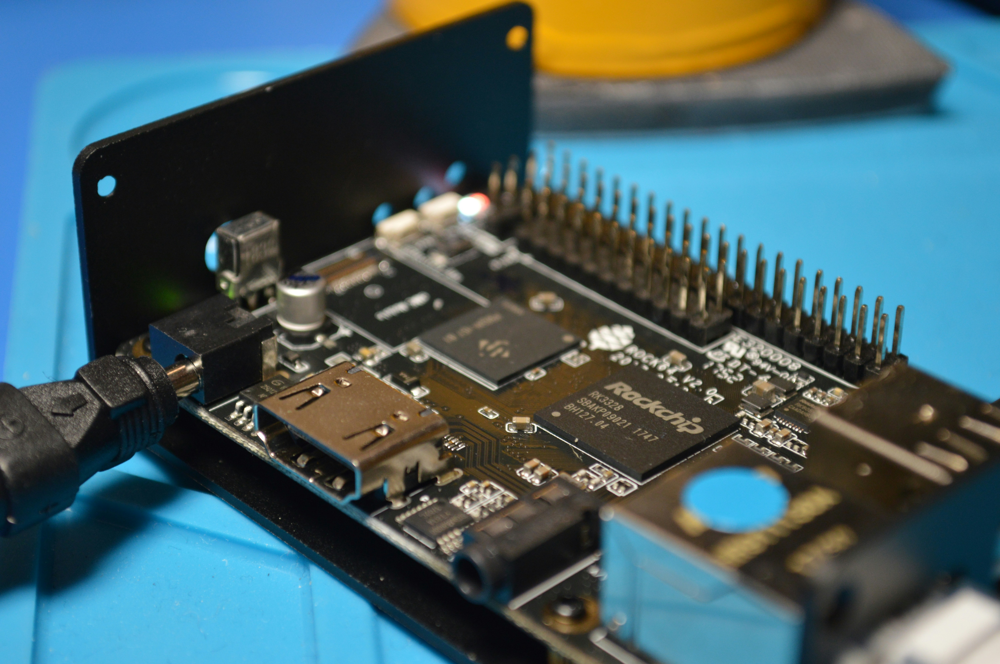

Cole Wangler
Software and Computer Engineering
Career Asperations:
Hello! My name is Cole Wangler. I am currently double majoring in software and computer engineering at NDSU. It is currently my second
year at NDSU and I have really been enjoying it. After graduating I have plans to get a carreer as a embedded systems engineer. With my subset being
geared towards embedded software. I believe it is important to get a good theoretical mindset behind computer science to understand the code
and then learn how to apply engineering principles to effectively create software systems. My ideal job would be working in the RND section of a company
so then I can create new devices that will help people.
I grew up in a small agricultural town Madison, Minnesota. I got interested into the stem field when I joined my highschool FIRST Robotics team. When I was about 14 I researched and built my own computer which is why I decided computer engineering would be a good fit for me. I didnt know how much I enjoyed coding until I started taking my computer science courses at college. This is when I decided I wanted to become an engineer but still work with software. I am now currently looking for chances to get industry experience.
Interests
Programming
The inspiration behind coding lies in the boundless realm of creativity and problem-solving. The ability to transform abstract concepts into tangible, functional programs is a testament to the power of human ingenuity. Beyond the tangible outcomes, coding fosters a mindset of continual learning and adaptability, as technology evolves rapidly. The constant challenge of overcoming obstacles, unraveling complex puzzles, and contributing to the ever-expanding digital landscape serves as a perpetual wellspring of inspiration for those immersed in the world of coding.
Embedded Systems
Embedded systems find inspiration in the overarching pursuit of enhancing technological integration. The motivation lies in creating efficient and functional solutions, whether optimizing processes, improving user experiences, or enabling autonomous functionality.
AI

AI finds diverse applications across industries, revolutionizing processes and enhancing efficiency. From healthcare diagnostics and finance to personalized recommendations in entertainment, AI plays a pivotal role in automating tasks, analyzing data, and making informed decisions. Its adaptability and learning capabilities empower applications in autonomous vehicles, customer service, and even creative endeavors, showcasing its transformative impact on numerous facets of modern life.